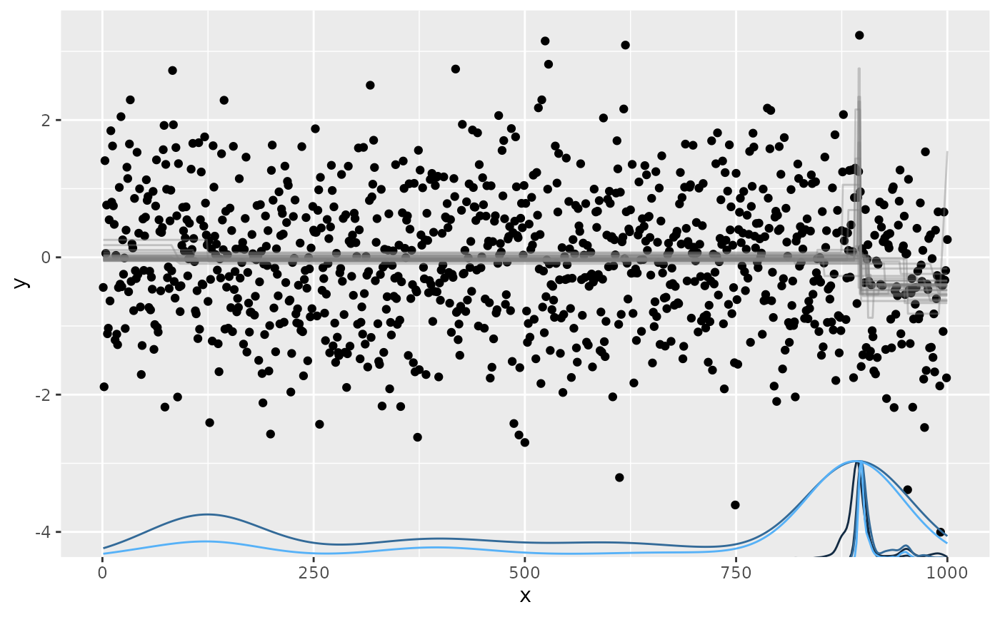

Change points in a time course
In order to not only use Sys.sleep() but do some actual computations, we chose as a toy problem the inference of change points in a time course with repeated observations of the same measurement. First, we will start off with simulating data that has an increasing integer x coordinate (time point) and a continuous y coordinate (observation value).
We will then use the mcp package to detect a point in x where the value of y changes abruptly. This package is able to infer many different kinds of change points. Here, we make use of changing intercepts with constant, normally distributed noise. The package is built on rjags, which uses a Gibbs sampling Markov-Chain Monte Carlo (MCMC).
These computations are usually computationally expensive, but the individual sampling chains are independent of each other. This makes this kind of problem amenable to extensive parallelization.
Fortunately, the rjags package is already provided as a module, so we can load it using the following command:
module load rjags/4-10-R-4.1.2After running this, it should be available from within R via library(rjags). We still need to install.packages("mcp"), but as this does not require external tools it should work without issues. Note that the system-wide R package library is not writable for individual users, so you have to use your user library in your home directory (R will prompt you to do this).
Creating a function to simulate data
We can use the following function to simulate our data:
simulate_data = function(n=1, len=1000, bps=c(0,1,2)) {
# simulate one data set with random break points and y coordinates
simulate_one = function() {
sim = data.frame(x=seq_len(len), y=rnorm(len))
for (bp in sample(bps, 1)) {
loc = sample(seq_len(len), 1)
sim$y[loc:len] = sim$y[loc:len] + rnorm(1)
}
sim
}
# if we simulate one data set, return a data.frame, otherwise a list thereof
res = replicate(n, simulate_one(), simplify=FALSE)
if (length(res) == 1) {
res[[1]]
} else {
res
}
}This will randomly generate one sample with our x and y coordinates. The resulting data should look something like this:
sim = simulate_data(bps=1)
plot(sim)Running break point inference
We can now use our simulated data as a starting point to infer the breakpoints that we simulated. Using the mcp package, we run three different models:
- One segment, no breakpoints
- Two segments, one breakpoint
- Three segments, two breakpoints
When then compare these models in terms of how well they fit the data, and return the model that fits best:
library(mcp)
run_mcp = function(sim) {
# one unbroken segment, 2 segments with one break point, 3 segments 2 bps
mods = list(list(y ~ 1),
list(y ~ 1, ~ 1),
list(y ~ 1, ~ 1, ~ 1))
# fit all three models, select the best using leave-one-out
fits = lapply(mods, function(m) mcp::mcp(m, data=sim, par_x="x"))
compare = as.data.frame(loo::loo_compare(lapply(fits, mcp::loo)))
best = as.integer(sub("model", "", rownames(compare)))[1]
fits[[best]]
}The resulting model should look something like this:
mod = run_mcp(sim)
#> Compiling model graph
#> Resolving undeclared variables
#> Allocating nodes
#> Graph information:
#> Observed stochastic nodes: 1000
#> Unobserved stochastic nodes: 2
#> Total graph size: 5019
#>
#> Initializing model
#> Finished sampling in 18.7 seconds
#> Compiling model graph
#> Resolving undeclared variables
#> Allocating nodes
#> Graph information:
#> Observed stochastic nodes: 1000
#> Unobserved stochastic nodes: 4
#> Total graph size: 12020
#>
#> Initializing model
#> Finished sampling in 72.7 seconds
#> Compiling model graph
#> Resolving undeclared variables
#> Allocating nodes
#> Graph information:
#> Observed stochastic nodes: 1000
#> Unobserved stochastic nodes: 6
#> Total graph size: 17028
#>
#> Initializing model
#> Finished sampling in 152.6 seconds
#> Warning: Some Pareto k diagnostic values are too high. See help('pareto-k-diagnostic') for details.
#> Warning: Some Pareto k diagnostic values are too high. See help('pareto-k-diagnostic') for details.
plot(mod)
Here, we see the x and y coordinates of our observations as before, but in addition we see the traces of the intercepts (grey lines) and the probability density of the break point itself (blue line close to the bottom of the plot).
Exercise
- Use your editor to create the break point simulation script (hint: you can use Esc+
:set pastein nvim to copy-paste the text without automatic indentation and:set nopasteto return) - Simulate data for one and two break points
- Start an interactive job with 1 task and 5 cores
- Run the
mcpinference script to try and estimate the breakpoints from the data. Do they match to the parameters of your simulation? (hint: you can use theplotfunction on anmcpmodel object; this will create anRplots.pdfafter which you’ll need todev.off()and copy to your local machine) - Which options do you see to make this code run faster? (hint: there is both
mcp-provided parallelism and and sequential steps in the inference code) - How much runtime can you save by running computations in parallel?
Bigger data sets
The strategy of reserving a node with many CPUs works well up to the extent where we want to process more computations in parallel than there is CPUs on a given node (modern nodes often have up to 128 cores/threads).
Here, we want to simulate such a big computational task, but for this to not use too many resources we will limit the overall amount.
Exercise
- Simulate 10 breakpoint data sets using the function above, and save the resulting list in an
.rdsobject (usingsaveRDS) - Write a submission script with 10 tasks that load the object, subset the current task index, and save the resulting model as
.rdsand model plot as.pdf(hint: there are automatic environment variables available for each slurm run, such asSLURM_PROCID)
HPC-specific packages
There are also multiple packages available to make use of HPC resources from within R. That is to say, that R will submit a job or multiple jobs, and retrieve the result back to the session.
There is, for instance, the packages BatchJobs and batchtools. These make use of the networked file system to write each call and its arguments to a file, that is then retrieved by the job and excecuted. These packages are robust for small numbers of jobs, however, the will put a substantial strain on the file system for a high number of function calls.
Instead, we will introduce two packages that make only little use of the shared file system, slurmR and clustermq. (Note that I am the author of the latter, so there’s a bit of a conflict of interest here.)
slurmR
The slurmR package is a lightweight (dependency-free) R package that allows users to interact with the scheduler.
It can be used to create a cluster object on Slurm tasks analogous to parallel::makePSOCKcluster. The command for this is slurmR::makeSlurmCluster(ntasks), which can then be used with the parLapply or parSapply functions:
library(slurmR)
cl = makeSlurmCluster(5)
res = parSapply(1:100, function(x) mean(runif(100)))
stopCluster(cl)The sbatch call that is created via makeSlurmCluster can be customized by passing different parameters to the cluster creation function. In particular, we need to:
- Include the right budgeting account
More details can be found in their Getting Started vignette.
clustermq
The clustermq package provides an interface to multiple HPC schedulers (including Slurm) via the ZeroMQ socket library, available as a module:
module load GCCcore/10.2.0 ZeroMQ/4.3.3The package relies on a submission template, which by default submits Slurm jobs as a job array. As we need to supply an account name, and the policy on Sulis is to use tasks whenever possible, we should modify the submission template to:
- Include the right budgeting account
- Load the right modules in the submission script
- Use
srunwith multiple tasks instead of the job array
The new template should look something like this:
#!/bin/sh
#SBATCH --account={{ account | su105 }}
#SBATCH --job-name={{ job_name }}
#SBATCH --tasks={{ n_jobs }}
#SBATCH --mem-per-cpu={{ memory | 1024M }}
#SBATCH --cpus-per-task={{ cores | 1 }}
CMQ_AUTH={{ auth }} srun R --no-save --no-restore -e 'clustermq:::worker("{{ master }}")'When can then use this newly created template by:
options(clustermq.template = "/path/to/updated/template")This should make the above example run. More information is available at the User Guide vignette.